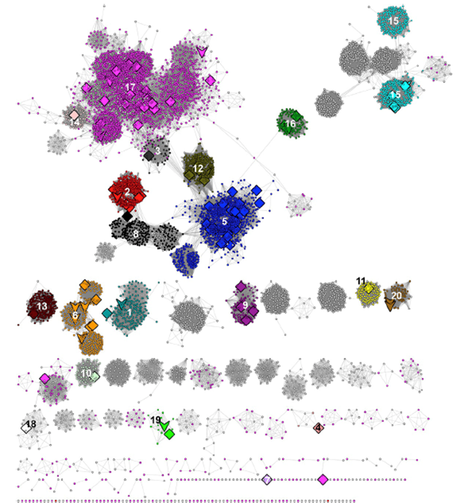

Exploring the Radical SAM Enzyme Superfamily
The members of the radical SAM superfamily contain a Fe4S4 cluster that binds S-adenosyl methionine (SAM); one-electron reduction of the bound SAM yields a 5′-deoxyadenosyl radical (5′-dAdo•) and Met. The 5′-dAdo• generates a substrate radical (R•) (and 5′-deoxyadenosine) that undergoes intriguing and often complex chemistry to yield the product. The radical SAM superfamily has attracted the attention of the mechanistic enzymology/bioinorganic chemistry communities.
The Structure-Function Linkage Database (SFLD; http://sfld.rbvi.ucsf.edu/archive/django/index.html) used sequence similarity networks (SSNs) to segregate the superfamily into 20 subgroups with characterized functions and 22 without characterized functions, with the goal of making the superfamily accessible to the community. That curation effort was described in Methods in Enzymology Volume 606 in 2018: Atlas of the Radical SAM Superfamily: Divergent Evolution of Function Using an "Plug and Play" Domain, G.L. Holliday, E. Akiva, E.C. Meng, S.D. Brown, S. Calhoun, U. Pieper, A. Sali, S.J. Booker and P.C. Babbitt (doi: 10.1016/bs.mie.2018.06.004). The radical SAM superfamily then included 113,776 sequences. The SSN used to define the subgroups is reproduced below (Figure 5 in the Atlas), with the nodes in the 20 characterized subgroups defined by clusters in the SSN highlighted (minimum e-value threshold to draw edges is 20). Unfortunately, the SFLD is now an archive.

As of January 1, 2020, the radical SAM superfamily included 550,775 sequences (InterPro families IPR007197 and IPR006638 from UniProt Release 2019_10). The size of the superfamily will continue to increase: the doubling time for the UniProt database is ~2.5 yrs.
We provide a web resource (https://efi.igb.illinois.edu/; doi: 10.1021/acs.biochem.9b00735; ) that provides "genomic enzymology" tools. These tools are widely used by the enzymology, chemical biology, and microbiology communities to explore sequence-function space in protein families (SSNs using EFI-EST), discover genome context that may provide clues for assigning functions to uncharacterized enzymes (GNNs/GNDs using EFI-GNT), and prioritizing uncharacterized members for functional assignment based on metagenome abundance (EFI-CGFP).
However, the increasing size of the radical SAM superfamily makes it difficult/impossible to use our tools to investigate the various subgroups. Therefore, we are developing radicalSAM.org to provide access to the sequences in the various subgroups as well as useful information about the subgroups. The sequences can be used as input for EFI-EST to generate SSNs that, in turn, can be used with EFI-GNT and EFI-CGFP.
We used the SSN generated with the sequences in InterPro families IPR007197 and IPR006638 in UniProt Release 2019_10/InterPro Release 77 as the reference dataset. In this SSN, the minimum alignment score threshold to draw edges is 11. This SSN includes 43,385 UniRef50 IDs/clusters and 36,130,127 edges. Visualization of this SSN requires a computer with ≥256GB RAM, i.e., well beyond that found in most experimental laboratories.

In contrast to the SFLD’s SSN, the clusters for the subgroups are not separated in this SSN, the result of both the larger number of sequences and the minimization of the number of singletons.
This SSN was manually edited to remove "long" edges, resulting a simpler SSN, although it still contains five "megaclusters".
{kind=link}
The megaclusters then were segregated into the component clusters/subgroups in radicalSAM.org using SSNs generated with larger minimum alignment score thresholds to draw edges and additional manual editing to remove "long" edges.
RadicalSAM.org provides a page for each subgroup/cluster so defined that provides access to several types of information and file downloads: clusters sizes (numbers of UniProt, UniRef90, and UniRef50 IDs), length histogram, WebLogo and multiple sequence alignment (MSA), HMM, lists of UniProt, UniRef90, and UniRef50 IDs, FASTA files for UniProt, UniRef90, and UniRef50 IDs, SwissProt functions, KEGG-annotated sequence IDs, TIGR families, and community-provided annotations that are not yet included in SwissProt. The lists of IDs can be used with Option D of EFI-EST to generate SSNs that can be used to explore sequence-function space in SSNs, identify genome context for bacterial and fungal proteins using EFI-GNT, and quantitate metagenome abundance using EFI-CGFP.
We used the MSA for each subgroup/cluster to generate a hidden Markov model (HMM); we are using these HMMs to update the sequences for each release of the UniProt/InterPro databases. Sequence-function space in subgroup 17, SPASM/Twitch domain-containing (magenta nodes in the SSNs), is too diverse for this HMM-based approach for updating; the sequences in this subgroup currently are updated manually with each database release.